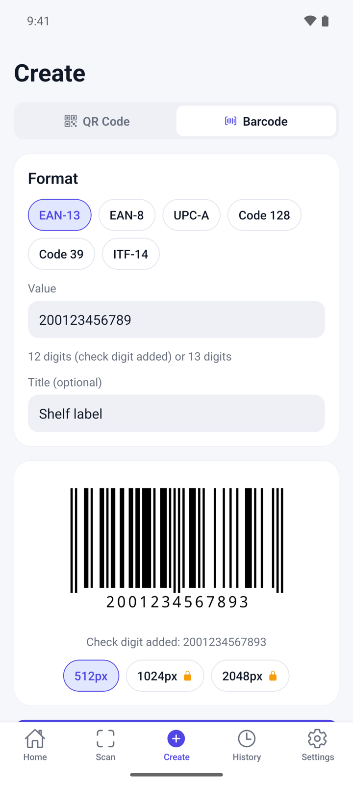

기능 소개
QR & Barcode Toolkit은 카메라나 사진으로 QR 코드와 바코드를 스캔하고, 열기 전에 안에 든 내용을 먼저 보여 줍니다. QR 코드와 바코드를 직접 만들어 이미지로 저장하거나 공유할 수도 있어요. 앱은 21개 언어를 지원하며 휴대폰 언어를 따라갑니다.
- 코드는 기기에서 읽습니다. 링크는 저절로 열리지 않아요.
- 계정이 필요 없고, 기록은 내 휴대폰에만 남아요.
- QR 코드와 12가지 바코드 종류(EAN-13, UPC-A, Code 128 등)를 읽어요.
- 광고가 있는 무료 앱이에요. 한 번 결제하는 Premium으로 광고를 없애고 스타일 옵션을 더 쓸 수 있어요.
시작하기
- QR & Barcode Toolkit을 엽니다. Home에 Scan QR, Scan Barcode, Create QR, Create Barcode 바로가기 네 개가 있어요.
- Scan QR을 누릅니다. 처음에는 Allow camera를 누르고, Android가 물으면 카메라를 허용하세요.
- 카메라를 쓰고 싶지 않다면 Scan from an image instead를 누르고 사진을 고르세요. 사진 보관함 전체에 접근할 필요는 없어요.

코드 스캔하기
- 아래쪽의 Scan을 누르거나 Home의 스캔 바로가기를 누릅니다.
- 위쪽에서 QR Code 또는 Barcode를 고릅니다.
- 카메라를 코드에 맞춥니다. 바코드는 프레임 안에 들어오게 하세요.
- 어두운 곳에서는 손전등 버튼을 누릅니다. 사진에서 코드를 읽으려면 사진 버튼을 누르고 사진을 고르세요.
- 코드를 읽으면 Scan Result가 열립니다. Website, Wi-Fi, Contact, Product 같은 내용 종류가 표시돼요.
- Copy content 또는 Share as text를 누르거나, Scan another를 눌러 카메라로 돌아갑니다.
링크를 열기 전에 확인하기
- 웹 주소가 담긴 코드를 스캔합니다. 결과에 사이트 이름과 전체 주소가 나옵니다.
- 경고가 있으면 읽어 보세요. 암호화되지 않은(http) 링크, 단축 링크, IP 주소 그대로인 링크, 숨겨진 로그인 정보, 비슷하게 생긴 문자를 쓴 링크에 대해 경고해 줍니다.
- 믿을 수 있는 사이트일 때만 Open link를 누르고, 확인 창에서 Open을 누르세요.

다른 종류의 코드에는 각각 맞는 버튼이 나옵니다. Compose email, Call, Send message, Open in Maps, Search the web이 있어요. 어느 버튼이든 앱을 벗어나기 전에 먼저 물어봅니다.
Wi-Fi 코드 읽기
- Wi-Fi QR 코드를 스캔합니다. 결과에 Network, Security, Password가 표시됩니다.
- 눈 모양 아이콘을 눌러 비밀번호를 표시합니다.
- 비밀번호 옆의 복사 아이콘을 누릅니다.
- 휴대폰의 Wi-Fi 설정을 열고, 복사한 비밀번호로 네트워크에 연결하세요. 앱이 대신 연결해 주지는 않아요.

QR 코드 만들기
- Create를 누르고 QR Code를 고릅니다.
- Content type에서 Website, Text, Wi-Fi, Email, Phone, SMS, Contact, Location 중 하나를 고릅니다.
- 항목을 입력합니다. 내용이 올바르면 바로 QR 코드가 나타나요. 기록에서 부를 이름을 정하고 싶다면 **Title (optional)**을 입력하세요.
- Style에서 템플릿 Classic, Indigo, Forest 중 하나를 고릅니다. Foreground와 Background 색, Error correction 단계도 바꿀 수 있어요.
- 보관하려면 Save to history, 이미지를 보내려면 Share, 갤러리에 넣으려면 Save image를 누릅니다.

자물쇠가 있는 옵션은 Premium에 포함돼요.
바코드 만들기
- Create를 누르고 Barcode를 고릅니다.
- Format에서 EAN-13, EAN-8, UPC-A, Code 128, Code 39, ITF-14 중 하나를 고릅니다.
- Value를 입력합니다. 입력란 아래 문구에 그 형식이 받는 값이 안내돼요. 상품 코드는 체크 숫자를 빼고 입력해도 앱이 붙여 줍니다.
- 이름을 정하고 싶다면 **Title (optional)**을 입력합니다.
- Save to history, Share, Save image 중 하나를 누릅니다.

코드 찾기, 다시 쓰기, 삭제하기
- History를 누릅니다. 스캔한 코드와 만든 코드가 목록으로 나와요.
- Search에 입력하거나 All, Scanned, Created, Favorites, Any type, QR, Barcode 필터를 사용하세요.
- 목록에서 별을 누르면 즐겨찾기에 추가됩니다.
- 항목을 누르면 Details가 열립니다. 여기서 Copy content, Share as text, Delete를 누를 수 있어요. QR 코드와 앱에서 만들 수 있는 바코드 형식은 코드 이미지도 함께 보이고 Share image, Edit / reuse도 쓸 수 있습니다.
- 목록을 비우려면 위쪽의 휴지통 아이콘을 누른 뒤 Clear를 누르세요. 즐겨찾기는 남습니다.
설정 바꾸기
- Settings를 누릅니다.
- 스캔 기록을 남기고 싶지 않다면 Save scans to history를 끕니다.
- Haptic feedback을 켜거나 끕니다.
- Wi-Fi 비밀번호를 저장하고 싶을 때만 Keep Wi-Fi passwords in history를 켜세요. 기본값은 꺼짐이에요.
- Language를 눌러 앱 언어를 고릅니다. 기본적으로 앱은 휴대폰 언어를 따라갑니다.
- 즐겨찾기를 포함해 모든 스캔과 만든 코드를 지우려면 Clear all history를 누른 뒤 Delete all을 누릅니다.
Premium
Premium은 구독이 아니라 한 번만 결제하는 방식이에요. Settings를 열고 Go Premium을 누르거나, Home에서 See plans를 누르세요. Premium으로 다음을 쓸 수 있어요.
- 광고 없음
- 원하는 색, 프리미엄 템플릿, QR 코드 속 로고
- 무제한 기록과 즐겨찾기
- 1024px, 2048px 크기로 내보내기
Premium이 없을 때 잠긴 템플릿, 색, Add logo를 누르면 Watch an ad가 나올 수 있어요. 광고를 보면 앱을 닫을 때까지 이 스타일 옵션을 쓸 수 있습니다. 전에 Premium을 구매했다면 Settings에서 Restore purchases를 누르세요.
자주 묻는 질문
앱이 링크를 저절로 열기도 하나요? 아니요. 먼저 주소와 경고를 보여 줍니다. Open link를 누르고 확인한 뒤에만 링크가 열려요.
어떤 코드를 읽을 수 있나요? QR, EAN-13, EAN-8, UPC-A, UPC-E, Code 128, Code 39, Code 93, Codabar, ITF-14, PDF417, Data Matrix, Aztec을 읽을 수 있어요.
기록에 Wi-Fi 비밀번호가 없는 이유가 뭔가요? Wi-Fi 비밀번호는 코드를 저장하기 전에 지워집니다. 비밀번호를 남기려면 코드를 스캔하거나 만들기 전에 Settings에서 Keep Wi-Fi passwords in history를 켜세요.
코드는 몇 개까지 저장되나요? 무료 버전은 최근 스캔 100개와 만든 코드 100개, 즐겨찾기 최대 10개를 보관해요. 무료 목록이 가득 차면 History에서 알려 주고, 새 항목이 가장 오래된 항목을 대신합니다. 즐겨찾기는 목록이 가득 차도 지워지지 않아요. Premium은 제한이 없습니다.
다크 모드가 있나요? 네. 앱은 휴대폰의 밝은 테마 또는 어두운 테마를 따라갑니다.
개인정보
코드는 기기에서 읽고, 기록은 내 휴대폰에만 남아요. 무료 버전에는 Google AdMob 광고가 표시됩니다. 자세한 내용은 개인정보 처리방침에서 확인하세요.